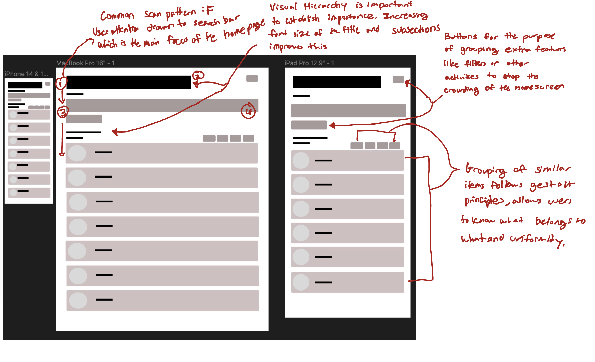
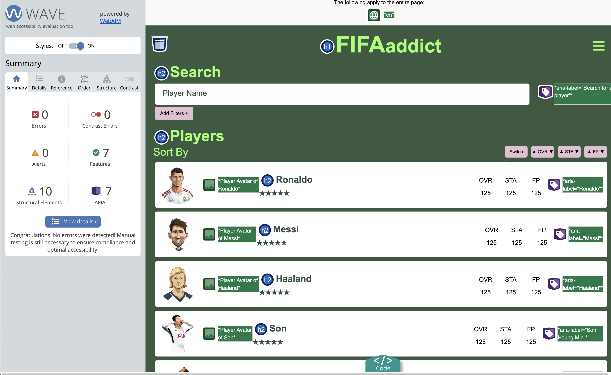

Redesigning FifaAddict
Overview:
FIFAaddict is a useful tool for the video game FIFA Online 4 which is a free-to-play multiplayer football (soccer) game. FIFAaddict offers a player database and tools for FIFA Online 4 players to search and compare player stats, calculate transfer tax, and build teams with updated data of the game.
Link to Website: FifaAddict Website
Redesign Reason:
I chose to redesign FIFAaddict because I am an active player of the video game. I have not used this website before but heard about it from friends. When I first expereinced the website, I noticed that this website's user experience is bothered with the design of the homepage. Navigating the homepage easier will improve the amount of people using the product and allow players to effectively use the website to the best of its ability.
Problems Identified:
Usability issues found:
The following are usability issues found:
- The website does not have a clear visual hierarchy as the site has a lot going on visually where it could benefit from emphasizing information, not allowing the user to strategically guide the user's attention.
- It does not have a common scan pattern such as ‘F’ or ‘Z’ pattern where a more structured layout could help in improving the navigation since the interface is so cluttered
- The color and layout also do not help in distinguishing the different sections so utilizing more color could help in organizing the layout
- The site could also utilize some gestalt principles where grouping similar items could be more grouped together such as buttons
- There is too much on the home page that makes it difficult to follow where one feature starts or ends
- The links at the top of the page are unknown of what they are so it is hard to navigate the website
Accessibility issues found:
The following are accessibility issues found from the WebAIM analysis (iamge above) which shows the accessibility problems of the website:
- Color contrast is a big problem where the problem is “very low contrast” which makes it hard to see the features
- Although aria labels are used, alternative text is missing which make it hard for users with screen readers to use the webpage.
- The text size made it difficult to read as well
Solutions
Most of the problems come from the cluttering of the homepage where there were too many features present in the home screen to notify new users where to navigate or how to easily use the website. My goals:
- Highlight the main feature of the website which is the search bar and the results which are the players
- Separate the other features and link those to different home pages via links
- Update the color contrasts and add accessibility features
- Increase text size
I have implemented these goals through sketches, lo-fi, and hi-fi designs to end up with the responsive redesign.
Sketches
This is a sketch of 9 redesigns, one done each minute for the website.

This is a final sketch, combining ideas from the 9 redesigns. The general idea that I grab from each was that the main point of the website was the search function and that I shouldn't add in unnecessary icons that were not apparent at the start.
Lo-Fi
The lo-fi wireframe was created to make the final sketch come to life. All the black squares represent text, the darker gray represent buttons, and the light brown represents the player cards.
Here are the annotations and why it is improved:
Style Guide
After creating the lo-fi wireframe and deciding that that is the design I am going for, I have decided to create some components, color, and type choices to ensure that I follow good design practices.
Hi-Fi
My hi-fi design is an amalgam of the lo-fi and the style guide where I introduced color, text, and images where I can clearly see that my redesign is working.
Responsive Redesign
Link to Website: Responsive Redesign
Reasonings behind my redesigns:
- I really wanted the focus to be on the search bar. I removed most of the buttons that filter the website and just made it all condensed into an add filters button where it will be established that all the filters on the homepage originally will be accessed through that button.
- Organizing the player cards also was similar. I kept the comparison with the three traits where the option button can change the traits.
- The homepage had two other features other than the search function that I decided to just add to the sandwich menu button area which is the "Latest Comments" feature and the "Tax Calculator". Both are important features to players but they are not that important to include on the front page. This is because as you do decrease the screen size of the original website, both the features just disappear from the website. So, I decided to do the same (although I did not implement the sandwich button nor the add filters+ button).
Looking at the redesign, I believe that I succeeded in following my annotations made from the Lo-Fi design where it answers the problems that I had originally which include: establishing a clear hierarchy where it is clear what the title is and what the subsections are. It does follow a common scan pattern where it follows the F pattern.  Looking at the accessibility analysis, all the problems went away, where the text size was great as well as the color contrast.
Redesigning a soccer database is important to keep players interested and to help them as well.